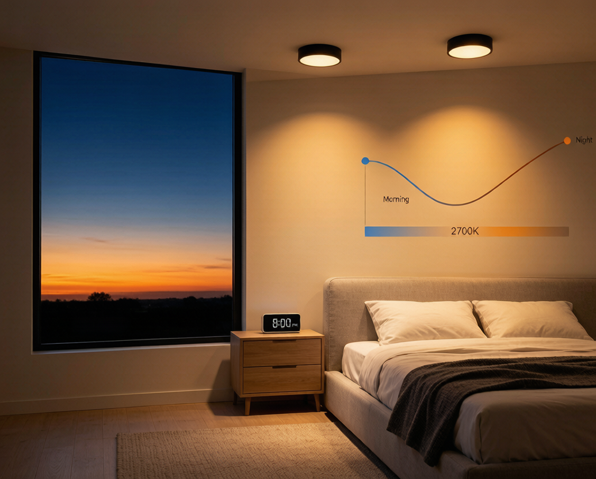
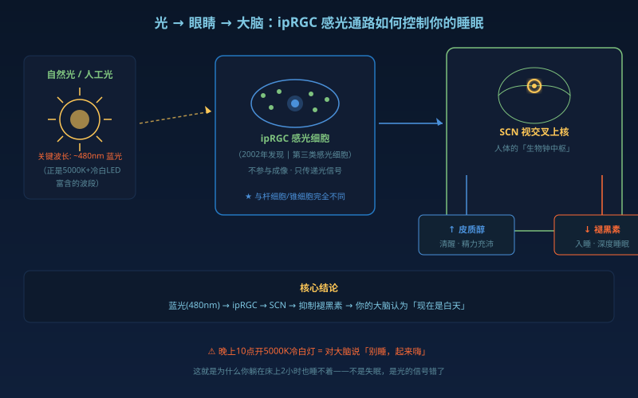
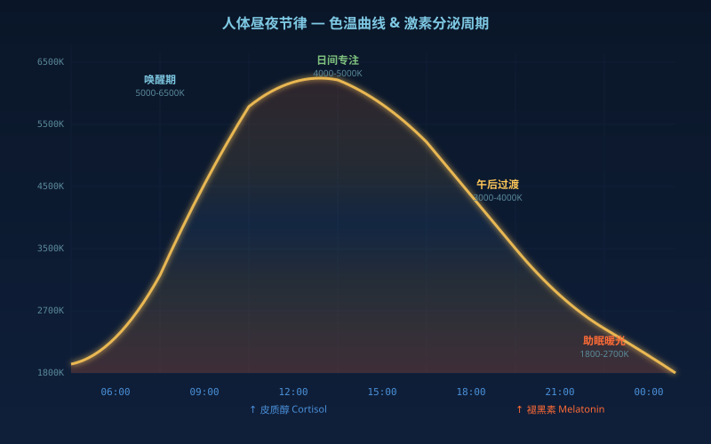
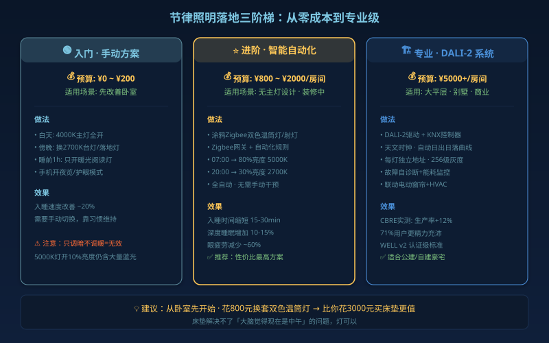

你家灯除了「亮」，还在偷偷控制你的睡眠、情绪和精力。这不是玄学，是2002年一项诺奖级发现的直接推论。
你的眼睛不只是用来看东西的
2002年，科学家在人眼视网膜上发现了一类全新的感光细胞——ipRGC（内在光敏视网膜神经节细胞）。它们不参与成像，不看文字、不分颜色，只有一个任务：检测环境光中的蓝光成分（~480nm），然后把信号直接送到大脑的「生物钟中枢」——视交叉上核（SCN）。

这个发现的意思很直白：你的身体把光当作「现在是几点」的时钟信号。
- 早晨：太阳光富含蓝光 → ipRGC检测到 → 抑制褪黑素、分泌皮质醇 → 你醒了，精力充沛
- 傍晚：自然光变暖变暗 → ipRGC信号减弱 → 褪黑素开始分泌 → 身体准备入睡
问题来了——你一天90%的时间在室内，头顶是固定色温5000K的LED灯。晚上10点，灯还是「中午的太阳」。
你的大脑收到信号：「现在是中午，别睡，精神起来。」 你说：「我在床上躺了2小时了怎么就是睡不着。」
这就是社会性时差（social jetlag）——不是你失眠，是你的灯在骗你的大脑。
节律照明到底做了什么？
简单说：让室内灯光照着太阳的节奏走。

| 时段 | 色温 | 照度 | 生理作用 |
|---|---|---|---|
| 6:00-9:00 唤醒 | 5000-6500K 冷白光 | 高亮度 | 抑制褪黑素，提神醒脑 |
| 9:00-15:00 日间 | 4000-5000K 自然白 | 中高亮度 | 维持专注，减少眼疲劳 |
| 15:00-19:00 午后 | 3000-4000K 暖白光 | 中亮度 | 逐步放松，模拟「黄金时刻」 |
| 19:00-睡前 | 1800-2700K 暖黄光 | 低亮度 | 促进褪黑素分泌，助眠 |
关键点是色温必须跟着亮度一起降。只调暗不调暖（比如5000K灯开10%亮度），蓝光成分不变，大脑照样被「中午信号」轰炸。
科学数据：到底有多大用？
这不是什么养生玄学。来几组硬数据：
- 荷兰特温特大学2016年研究（CBRE阿姆斯特丹办公室，120人，7个月）：71%感觉更精力充沛，76%感觉更开心，生产率提升12%
- 美国照明研究中心(LRC)：节律照明系统用户入睡时间缩短15-30分钟，深度睡眠增加10-15%
- WELL建筑标准v2：已把「节律照明设计」列为认证必须项，要求日间至少250 melanopic lux（黑视素照度）的眼位光照
- 中国GB/T 31831-2025新国标（2026年4月实施）：首次对LED频闪PSTLM/SVM设置强制限值，调光质量从「可选项」变「必选项」
一句话：节律照明不是智商税，是有数据支撑的健康投资。
怎么落地？三种方案对比

| 方案 | 实现方式 | 成本 | 适用场景 |
|---|---|---|---|
| 入门手动 | 白天开4000K灯，晚上换2700K台灯 | ¥0（换灯泡） | 预算有限，先改善卧室 |
| 智能调光调色 | 涂鸦Zigbee双色温筒灯/射灯+网关+自动化 | ¥800-2000/房间 | 装修中、无主灯设计 |
| 专业级DALI-2 | DALI-2驱动器+KNX/Casambi控制器+天文时钟 | ¥5000+/房间 | 大平层、别墅、商业 |
最务实的建议：普通人从卧室开始。装一套涂鸦Zigbee双色温筒灯（2700-6500K可调），设置两条自动化：
- 早上7:00：亮度80%，色温5000K → 自然唤醒
- 晚上20:00：亮度30%，色温2700K → 准备入睡
不用全屋改，先睡好觉再说。花800块钱改善睡眠，比你买3000块的床垫性价比高得多——因为床垫不解决「大脑觉得现在是中午」的问题，灯可以。
避坑提醒
- 「调光」≠「调色温」：只调亮度不调色温的普通智能灯，对节律基本没用
- 买双色温可调灯具：认准CCT范围（2700K-6500K），不是固定色温
- 蓝光膜/蓝光眼镜是补救措施：远不如从光源端直接降低色温
- 老人和夜班族最需要：老年人晶状体透光率下降，ipRGC接收的光信号本身就弱，更需要白天强光照补充
2026年Light+Building法兰克福展上，人因照明是全场最大的主题。涂鸦智能、Signify、Lutron都在推节律照明方案，说明这不是昙花一现的概念，而是行业正在认真对待的方向。
你家的灯，什么时候开始跟着太阳走？
参考：IEEE 1789-2015、WELL v2 L03 Circadian Lighting Design、GB/T 31831-2025、DiiA DALI-2 IEC 62386